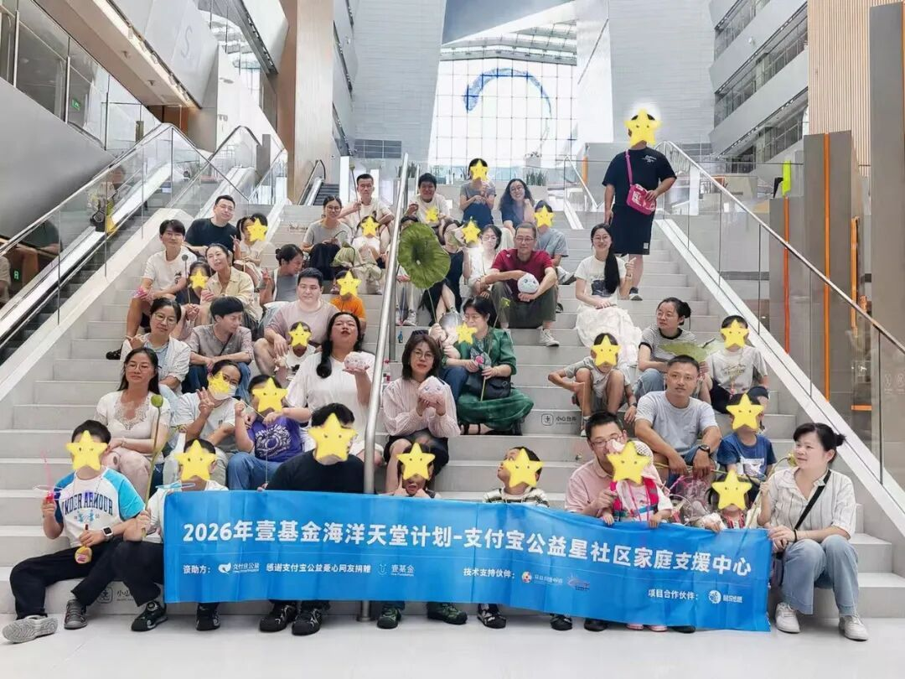
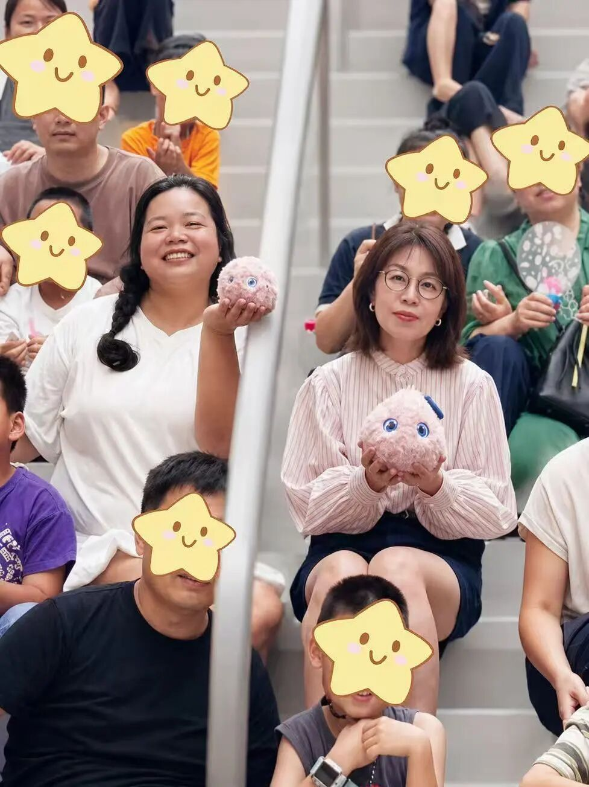
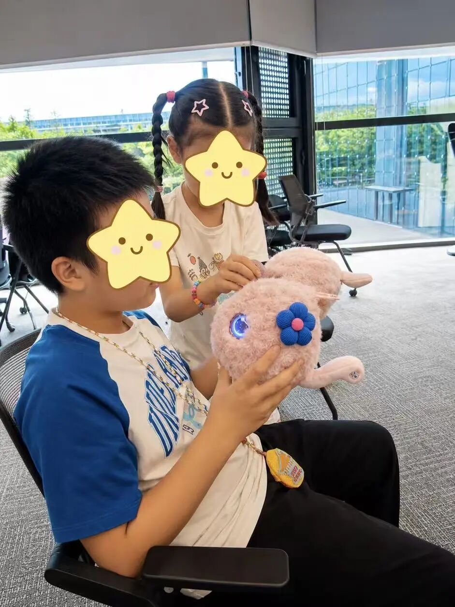
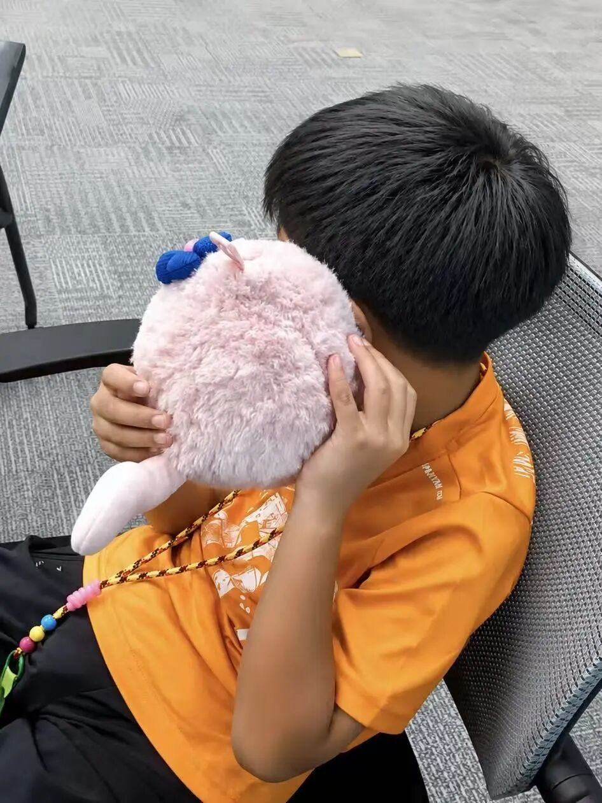
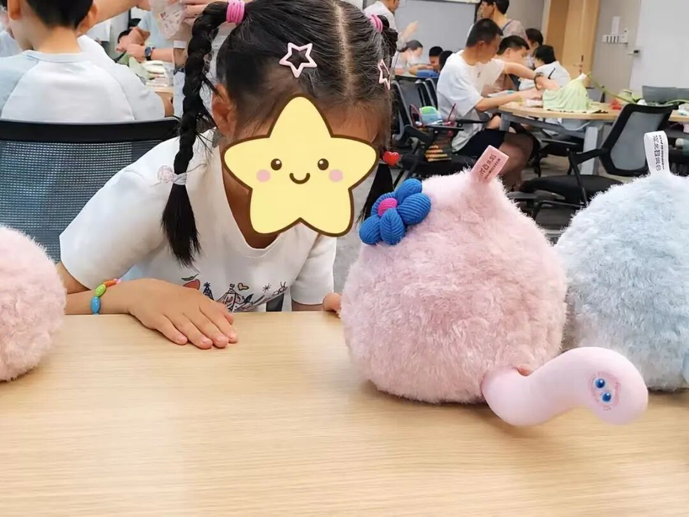

夏日悠长，爱意同行。7月19日，由壹基金发起的星宝夏意手作主题活动在阿里巴巴全国总部温情开展，众多星宝与家长齐聚一堂，在轻松治愈的手作时光里感受陪伴与温暖，超级球球AI儿童成长陪伴机器人也来到现场，倾听孩子们内心的小小心声。
本次活动为2026年壹基金海洋天堂计划 - 支付宝公益星社区家庭支援中心系列活动之一，面向星宝家庭搭建线下交流平台。平日里，不少星宝缺少轻松自在的社交场景，本次手作活动以趣味互动为载体，让孩子放下拘谨，家长之间也能够彼此交流、相互扶持。

活动现场暖意融融，软萌的超级球球吸引了大小朋友的目光。家长们捧着超级球球，认真了解这款专为特殊儿童打造的AI陪伴伙伴。依托情感交互技术，超级球球能够耐心倾听情绪、温和回应，为星宝提供低压力的倾诉渠道。

不少星宝主动上前体验超级球球。灵动的大眼、温柔的语音交互，没有急促的要求、没有压力的沟通方式，让孩子们愿意主动靠近。孩子们专注地和球球互动，沉浸式享受这段轻松的相处时光。


手作间隙，孩子们好奇打量不同配色的超级球球。柔软亲肤的毛绒外观、舒缓柔和的交互设计，充分适配星宝感官特点，轻量化无屏幕的形态，更适合日常随身携带。

欢声笑语贯穿整场活动。孩子们手捧超级球球展露笑颜，纯真的画面，正是本次公益活动想要抵达的初心。
夏日有尽，善意不止。未来，超级有爱将持续携手壹基金等公益组织，关注星宝心理健康，用有温度的情感AI，守护每一位特殊儿童自在成长。